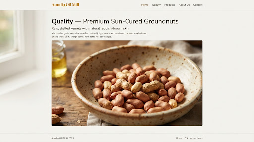
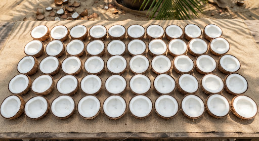
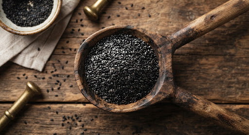
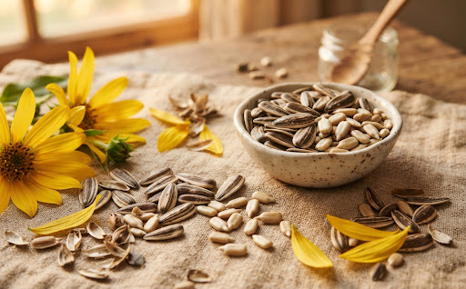
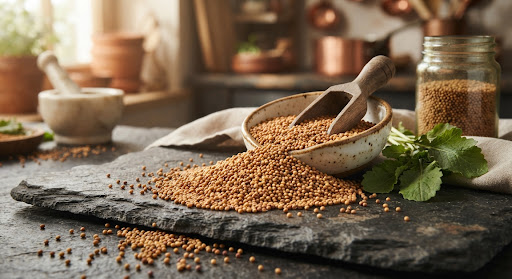

Quality You Can Trust
Careful selection, traditional cold extraction, and steadfast commitment to purity at every stage.
Selected Raw Materials
Hand-inspected non-GMO seeds from trusted farmers, vetted for uniform moisture and prime natural vitality before pressing.
Clean Processing
Hygienic food-grade stainless and traditional Vaagai wooden cold-press equipment maintained under strict sanitary norms.
Quality Checks
Rigorous batch tests ensuring zero adulteration, mineral oil, or synthetic additives with meticulous natural settling.
Customer Trust
Complete transparency from farm sourcing to final doorstep delivery in secure, food-grade airtight containers.
Pure Seeds. Honest Harvests.
The character of every drop comes directly from the seed. We never blend or dilute our single-ingredient raw presses.

Saurashtra OriginGroundnuts
Golden bold seeds with rich natural oils, carefully graded to eliminate broken or immature kernels.

Sulfur-FreeSun-Dried Coconut
Naturally cured white copra from coastal groves, dried in open sunshine without sulfur bleaching.

Heirloom GradeBlack Sesame
Whole organic sesame seeds packed with natural antioxidants, imparting authentic earthy aroma and flavor.

Non-GMO SeedSunflower Seeds
Plump seeds yielding light, nutrient-rich oil with high smoke stability and clean cooking clarity.

High PungencyMustard Seeds
High-grade whole mustard seeds delivering authentic pungency, vital allyl isothiocyanate, and digestive vigor.
Clean Oil, Just Like Nature Intended
No bleaches, no chemical solvents, and no extreme heat. Just honest, wholesome edible oil extracted using time-honored artisanal methods.
Traditional Wood Pestles
Extracted using authentic Vaagai wood chekku pestles that absorb frictional heat naturally, keeping the aroma, natural golden hue, and deep plant nutrients completely intact.
Natural Cloth & Settling
Instead of industrial filtration units or clarifying clays, our freshly crushed oil rests patiently in hygienic containers and is gently strained through unbleached natural cotton cloth.
Nothing Added, Ever
Every single bottle holds one single ingredient: freshly pressed seeds. Free of added colors, artificial preservatives, stabilizers, or cheaper filler oils from start to finish.
“From raw material selection to final packaging, every drop reflects our heritage of uncompromised purity.”
We invite you to discover how age-old Vaagai wooden pestles and modern sanitary hygiene work in harmony at our mill.